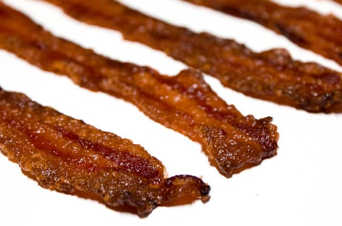
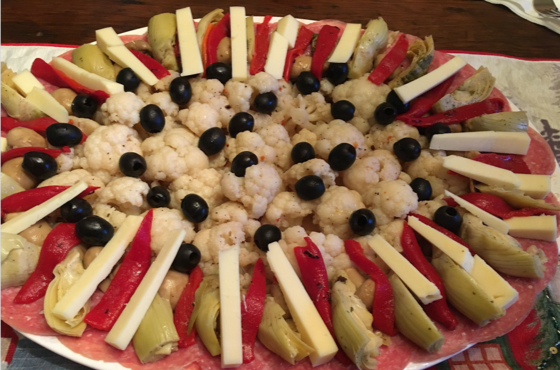
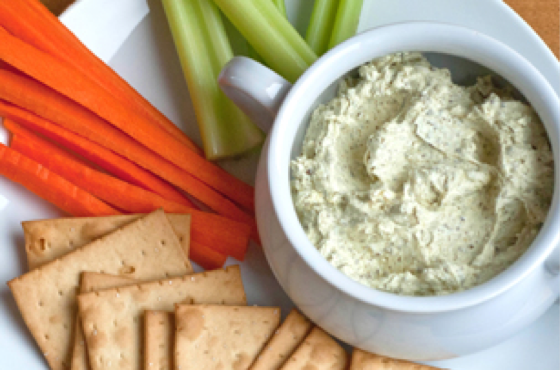
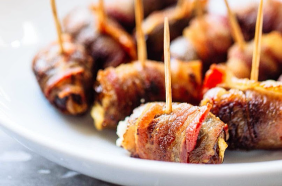
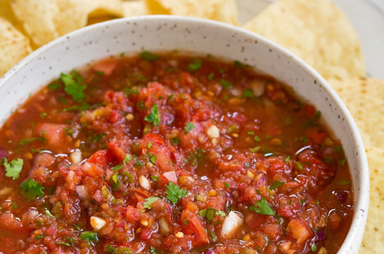

Appetizers
Ingredients
- 6 strips of bacon
- ½ cup brown sugar
- 1 tsp cayenne pepper
Directions
- Line a baking sheet with foil, keeping the shiny side down. Place a cooling rack on top of the foil.
- Dump the brown sugar and cayenne pepper into a zip lock bag. Seal and shake it to mix together.
- Put one strip of bacon at a time in the ziploc bag. Seal the bag and shake it so that the bacon is evenly coated with the spicy sugar.
- Lay the bacon on the wire rack. Continue with the remaining bacon.
- Bake in a 375F oven for around 20 minutes. You may want it in a little longer if you like it really crispy.
- Cool on the wire rack.
Submitted by David Singletary
My aunt makes this at the beach for the whole family. It doesn't last long

Antipasta
Prep Time: 2 hrs | Cook Time: 30 to 45 min | Total Time: 3 hrs
Ingredients
- 1 to 2 heads of cauliflower, cooked crisp/tender
- 1 to 2 jars artichoke hearts
- 1 to 2 jars mushrooms
- 1 to 2 jars roasted red peppers
- ¾ lb Genoa salami, thinly sliced
- 1 can black olives
- ½ to ¾ lb imported shart provolone cheese
- Red wine vinegar
- Olive oil
- Lemon juice
- Italian Seasonings
Directions
- Marinate all vegetables (in separate containers) in red wine vinegar, olive oil, lemon juice and Italian seasonings for a couple of hours.
- Arrange salami along outer edge of a large platter, place marinated cauliflower in the middle.
- Arrange all other veggies around cauliflower.
- Cut provolone in long wedges and place around platter. Scatter black olives on top.
- Serve with sliced Italian bread.
Submitted by Anthony Caddell
My mother is from an Italian-American family and we have had this dish, along with stuffed shells and meatballs on Christmas Day every year of my entire life (and most of hers as well). She begins the sauce for the main dish the night before and we anxiously await this appetizer all day. I'm from a small family and all of us (and now our spouses/children) sitting around the table kicking off Christmas Dinner with this dish is really special to us.

Creamy Pesto Dip
Prep Time: 5 min | Cook Time: 15 min | Total Time: 20 min
Ingredients
- 16 oz (2 bar) of softened cream cheese
- 6 oz jar pesto
- 1 jar of sun-dried tomatoes
Directions
- Preheat oven to 350 degrees.
- Put softened cream cheese and 3oz of pesto in a baking dish and mix.
- Spoon 3oz of sun-dried tomatoes on top.
- Heat in oven at 350 degrees until bubbly hot, about 15 minutes.
- Serve with seasoned or butter crackers or crostini bread.
Serving suggestion: add it to a charcuterie board so you can top the cracker and dip with olives and cured Italian meats.
Submitted by Patty Amatore
It is always a hit! I make this for my family on holidays and bring it to parties. Its very easy to whip up and friends always ask me to make it!

Bacon Wrapped Dates with Goat Cheese
Prep Time: 10 min | Cook Time: 20 min | Total Time: 30 min
Ingredients
- 8 slices bacon (thin bacon works better)
- 16 dates
- 4 oz goat cheese
- toothpicks
Directions
- Preheat oven to 350 degrees F.
- Slice the dates lengthwise on one side to create an opening. Remove the pit.
- Using a spoon, stuff a small amount of goat cheese into the cavity of each date and press the sides together to close.
- Cut the bacon slices in half. Wrap each date with a slice of bacon and secure with a toothpick.
- Arrange evenly on a baking sheet with raised edges (otherwise grease will get everywhere) and bake for 10 minutes. Remove the dates and use the toothpick to turn each one so it’s laying on its side. Bake for another 5-8 minutes, until browned to your liking, and turn the dates to the other side and repeat. Remove from the oven, place on a paper towel lined plate, and let stand for 5 minutes before serving.
* Coating the dates with a light layer of Balsamic Vinegar before baking is also a good variation for this recipe
Submitted by Marissa Medina
This is not my recipe. After having these at a Tapas restaurant in NYC I wanted to be able to make these myself at home. I found this recipe on Pinterest which seems to be almost the same as the restaurant. This is very easy to make.

Homemade Salsa
Prep Time: 5 min | Cook Time: 0 min | Total Time: 5 min
Ingredients
- (1) 28oz can whole peeled tomatoes (the cheaper, the better!)
- ½ white onion
- 5 cloves garlic (I know it sounds like a lot, but trust me...it's worth the bad breath)
- 1 lime, juiced
- 1 jalapeno (or 2 if you like it spicy! Remove seeds if not.)
- 1 handful cilantro (about half a cup)
- Salt and pepper, to taste
Directions
- Throw all the ingredients into your favorite large blender (I like to use my Ninja).
- Pulse 5-6 times (DO NOT OVER BLEND, chunky salsa > soupy salsa).
- Add salt and pepper to taste, then add some more.
- Chill until ready to serve
- Don't expect it to last long :)
Best if prepared a few hours before partying so that the flower really have a chance to blend.

Submitted by Kate Bothe
My fiancé is an amazing cook and we love to host. Our salsa has come to be an expected dish by our friends and family... it's honestly the easiest dish we make and really the only thing I can make unsupervised! I otherwise humbly accept my role as sous-chef/dish washer.